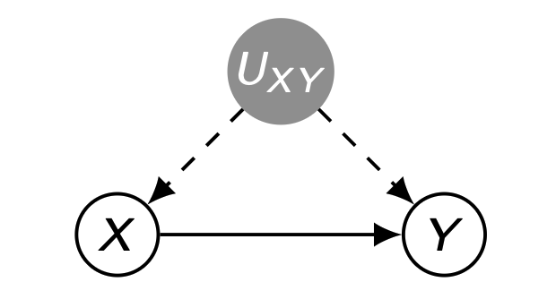
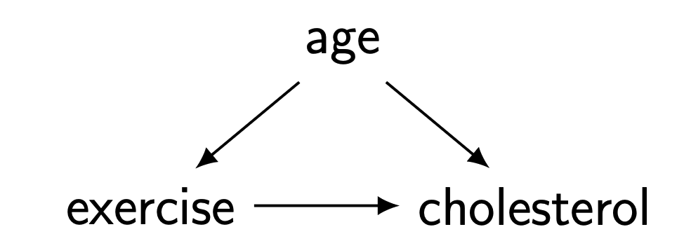
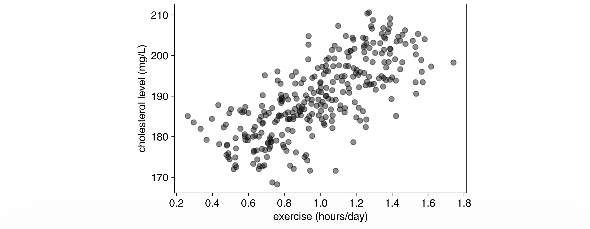
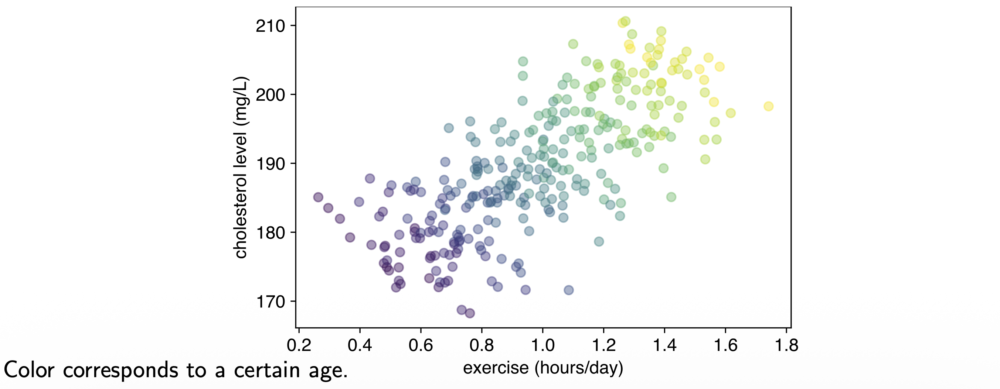
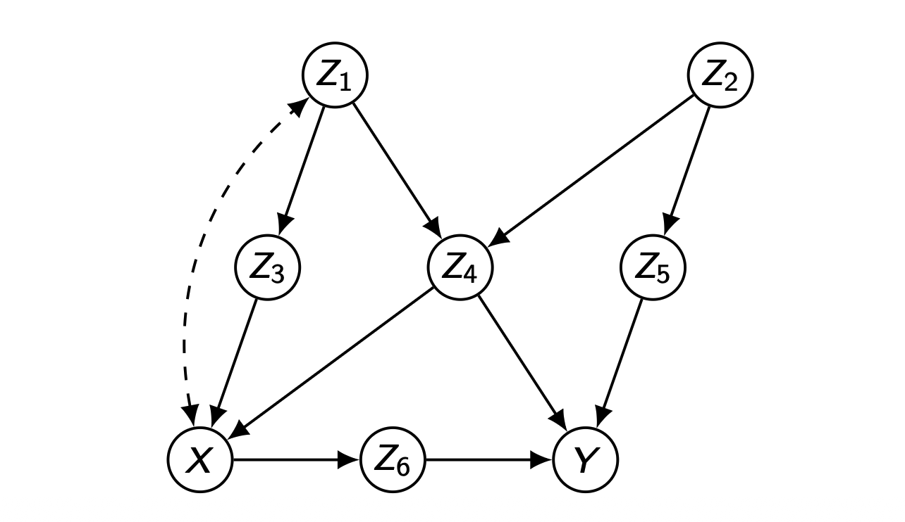
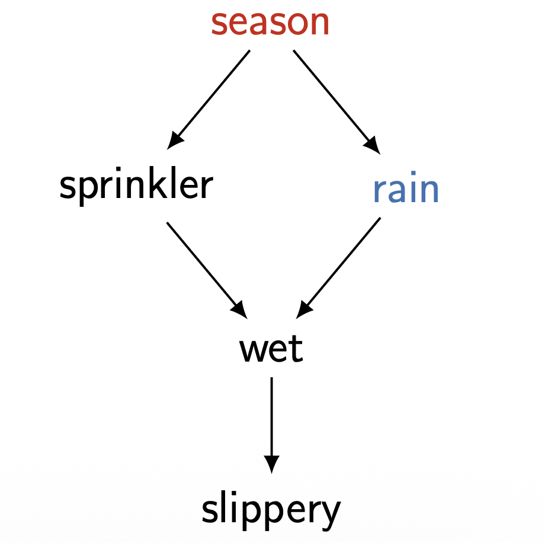
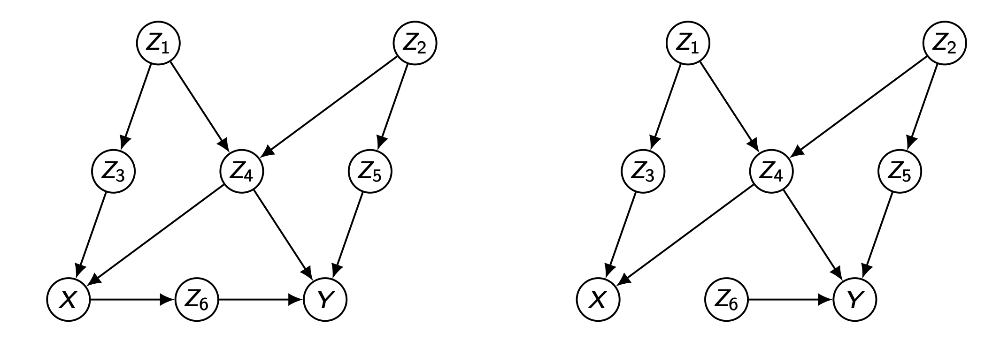
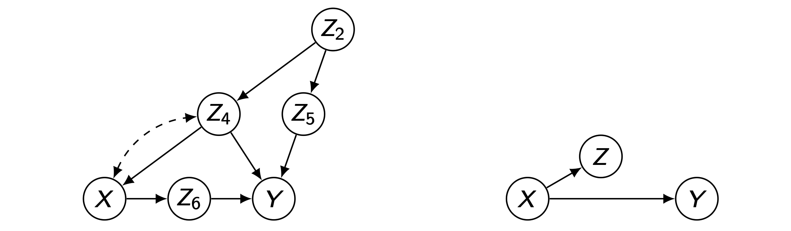
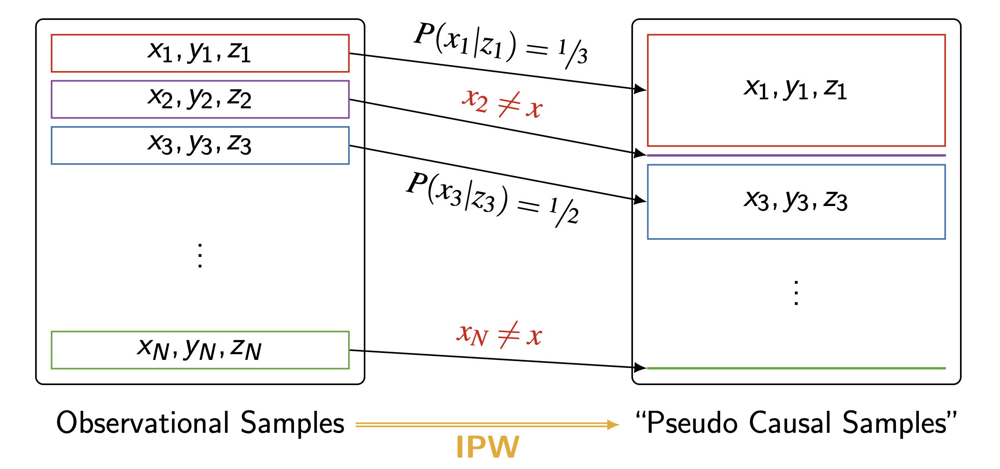

들어가며 (Introduction)
지난 글들에서 우리는 구조적 인과 모형(SCM), 개입(intervention), 그리고 \(do(\cdot)\) 연산자를 정의하고, 인과효과 \(P(y \mid do(x))\)가 무엇을 의미하는지 살펴보았습니다. 그러나 현실의 분석에서는 무작위 실험(RCT)을 수행할 수 없는 경우가 대부분이며, 우리가 손에 쥐고 있는 것은 오직 관측 분포(observational distribution) \(P(v)\) 뿐입니다.
이번 글의 핵심 질문은 다음과 같습니다.
관측 데이터 \(P(v)\)만으로 개입 분포 \(P(y \mid do(x))\)를 복원(식별)할 수 있는가? 가능하다면 어떤 조건에서, 어떤 공식으로 가능한가?
이 질문에 답하기 위해 우리는 먼저 식별 문제(identification problem)를 복습하고, 식별이 가능한 경우와 불가능한 경우를 구체적인 예제로 대비시킵니다. 그다음 인과추론 최대의 장애물인 교란 편향(confounding bias)의 정체를 밝히고, 이를 제거하는 핵심 도구인 Back-door Criterion과 그 추정 방법인 역확률 가중(IPW)까지 다루겠습니다.
본 포스트는 서울대학교 GSDS 이상학(Sanghack Lee) 교수님의 강의 자료(Prof. Bareinboim의 슬라이드를 차용)를 기반으로 정리하였습니다.
1. 식별 문제 복습 (Recap: Identification Problem)
먼저 식별(identification)이라는 개념을 한 문장으로 다시 정의해 보겠습니다.
- 식별(Identification): 인과 그래프 \(G\)의 구조적 가정과 관측 분포 \(P(v)\)만으로, 목표 인과량 \(Q = P(y \mid do(x))\)를 유일하게(uniquely) 결정할 수 있는가의 문제입니다.
여기서 “유일하게”라는 표현이 중요합니다. 식별 가능성을 판정하는 사고 실험은 다음과 같습니다.
- 동일한 그래프 \(G\)를 induce 하고, 동일한 관측 분포 \(P(v)\)를 만들어 내는 모든 SCM 후보 \(M^{(1)}, M^{(2)}, \dots\)를 생각합니다.
- 만약 이 후보들이 전부 동일한 \(P(y \mid do(x))\)를 산출한다면, 그 효과는 식별 가능(identifiable)합니다. 즉 데이터가 효과를 유일하게 결정합니다.
- 반대로, \(G\)와 \(P(v)\)를 똑같이 공유하면서도 서로 다른 \(P(y \mid do(x))\)를 내놓는 두 모형이 존재한다면, 그 효과는 식별 불가능(non-identifiable)합니다. 데이터만으로는 답을 좁힐 수 없는 것입니다.
이 “두 모형의 일치/불일치” 논리는 다음 두 예제에서 그대로 작동합니다.
2. 식별 가능 효과와 불가능 효과 (Identifiable and Non-identifiable Effects)
2.1 식별 가능한 효과 (Example: Identifiable Effect)
다음 그래프를 생각해 봅시다. \(Z\)는 \(X\)와 \(Y\)의 공통 원인(common cause), 즉 관측된 교란자입니다.

원본 그래프와 관측 분포. 그래프 \(X \leftarrow Z \to Y\), \(X \to Y\)에 호환되는 관측 분포는 부모 마르코프 분해(Markov factorization)에 의해 다음과 같습니다.
\[ P(v) = P(z)\,P(x \mid z)\,P(y \mid x, z) \]
두 후보 모형. 이 그래프와 분포에 호환되는 임의의 두 SCM을 생각합니다.
\[ M^{(1)} = \begin{cases} Z \leftarrow f_z^{(1)}(u_z) \\ X \leftarrow f_x^{(1)}(z, u_x) \\ Y \leftarrow f_y^{(1)}(x, z, u_y) \end{cases} \qquad M^{(2)} = \begin{cases} Z \leftarrow f_z^{(2)}(u_z) \\ X \leftarrow f_x^{(2)}(z, u_x) \\ Y \leftarrow f_y^{(2)}(x, z, u_y) \end{cases} \]
개입 후의 분포. \(do(x)\)는 구조방정식 \(X \leftarrow f_x(z, u_x)\)를 상수 대입 \(X \leftarrow x\)로 교체합니다. 이때 \(Z \to X\)로 들어오던 화살표가 제거되므로(절단된 모형), 개입 분포는 다음과 같이 단순화됩니다.
\[ P(v' \mid do(x)) = P(z)\,P(y \mid x, z) \]
마지막으로 \(Z\)를 주변화하면 우리가 원하는 인과효과를 얻습니다.
\[ P(y \mid do(x)) = \sum_z P(z)\,P(y \mid x, z) \]
식별 가능성의 핵심 논증. 결정적인 통찰은 다음에 있습니다.
- 구체적인 함수 \(f^{(\cdot)}\)나 외생 변수의 분포 \(P(u)\)가 무엇이든 상관없이,
- 두 모형 \(M^{(1)}, M^{(2)}\)가 \(\langle G, P(v) \rangle\)에서 일치한다면, 이들은 자동으로 \(P(z)\)와 \(P(y \mid x, z)\)에서도 일치합니다.
- 따라서 위 보정 공식에 의해 \(P(v' \mid do(x))\)에서도 반드시 일치합니다.
즉, 관측 분포가 효과를 유일하게 결정하므로 이 효과는 식별 가능합니다.
2.2 식별 불가능한 효과 (Example: Non-identifiable Effect)
이번에는 \(X\)와 \(Y\) 사이에 관측되지 않은 교란자(unobserved confounder) \(U_{XY}\)가 존재하는 경우를 봅니다. 이 양방향 의존성은 식별을 깨뜨립니다.

관측 분포. 잠재 변수 \(U_{XY}\)를 주변화한 관측 분포는 다음과 같습니다.
\[ P(v) = \sum_{u_{xy}} P(y \mid x, u_{xy})\,P(x \mid u_{xy})\,P(u_{xy}) \]
두 후보 모형. 동일한 그래프 \(G\)를 induce 하는 두 모형을 정의합니다. 외생 변수는 \(P_j(U_i = 1) = 1/2\) (\(i \in \{y, xy\}\), \(j \in \{1,2\}\))로 모두 공정한 동전입니다.
\[ M^{(1)} = \begin{cases} X \leftarrow U_{xy} \\ Y \leftarrow (X \oplus U_{xy}) \vee U_y \end{cases} \qquad M^{(2)} = \begin{cases} X \leftarrow U_{xy} \\ Y \leftarrow U_y \end{cases} \]
여기서 \(\oplus\)는 XOR(배타적 논리합), \(\vee\)는 OR(논리합)입니다. \(M^{(2)}\)에서는 \(Y\)가 \(X\)와 완전히 독립인 점에 주목합니다.
관측 수준에서의 일치 확인
먼저 두 모형이 관측 분포 \(P(V)\)에서 동일함을 진리표로 확인합니다. \(X = U_{xy}\)이므로 \(X\) 값은 \(U_{xy}\)가 결정합니다.
| \(U_y\) | \(U_{xy}\) | \(X\) | \(Y^{(1)}\) | \(Y^{(2)}\) | \(P(u)\) |
|---|---|---|---|---|---|
| 0 | 0 | 0 | 0 | 0 | \(1/4\) |
| 0 | 1 | 1 | 0 | 0 | \(1/4\) |
| 1 | 0 | 0 | 1 | 1 | \(1/4\) |
| 1 | 1 | 1 | 1 | 1 | \(1/4\) |
- \(M^{(1)}\)의 \(Y\) 계산: 예컨대 둘째 행 \(U_y=0, U_{xy}=1\)이면 \(X=1\), \(Y=(1\oplus 1)\vee 0 = 0 \vee 0 = 0\).
- 표에서 보듯 모든 행에서 \(Y^{(1)} = Y^{(2)}\)가 성립합니다. 따라서 두 모형은 관측 수준에서 완전히 구별 불가능합니다.
\[ P^{(1)}(V) = P^{(2)}(V) \]
개입 수준에서의 불일치 확인
이제 \(do(x)\)를 가합니다. 구조방정식 \(X \leftarrow U_{xy}\)가 \(X \leftarrow x\)로 교체되므로, \(X\)는 더 이상 \(U_{xy}\)를 따르지 않고 외생적으로 고정된 \(x\)가 됩니다. 개입 분포는 다음과 같습니다.
\[ P(v \mid do(x)) = \sum_{u_{xy}} P(y \mid x, u_{xy})\,P(u_{xy}) \]
개입 후의 진리표는 \(X\) 열이 모두 \(x\)(고정값)로 바뀝니다.
| \(U_y\) | \(U_{xy}\) | \(X\) | \(Y^{(1)}\) | \(Y^{(2)}\) | \(P(u)\) |
|---|---|---|---|---|---|
| 0 | 0 | \(x\) | \(x\) | 0 | \(1/4\) |
| 0 | 1 | \(x\) | \(\neg x\) | 0 | \(1/4\) |
| 1 | 0 | \(x\) | 1 | 1 | \(1/4\) |
| 1 | 1 | \(x\) | 1 | 1 | \(1/4\) |
- \(M^{(1)}\): \(Y = (x \oplus U_{xy}) \vee U_y\). 예컨대 첫째 행 \(U_y=0, U_{xy}=0\)이면 \(Y = (x \oplus 0) \vee 0 = x\). 둘째 행은 \(Y = (x \oplus 1)\vee 0 = \neg x\). \(U_y=1\)인 두 행은 OR에 의해 무조건 \(Y=1\).
- \(M^{(2)}\): \(Y = U_y\)이므로 \(X\)와 무관하게 \(U_y\) 값을 그대로 따릅니다.
이제 \(do(x)\) 하에서 \(Y\)의 분포를 계산합니다. (구체성을 위해 \(x=1\)로 두면 \(M^{(1)}\)의 위 두 행은 각각 \(Y=1, Y=0\)이 됩니다.)
| \(Y\) | \(P^{(1)}(Y \mid do(x))\) | \(P^{(2)}(Y \mid do(x))\) |
|---|---|---|
| 0 | \(1/4\) | \(1/2\) |
| 1 | \(3/4\) | \(1/2\) |
- \(M^{(1)}\): \(Y=1\)이 되는 경우는 세 행(\(x=1\) 행, \(U_y=1\)인 두 행)으로 \(P^{(1)}(Y=1 \mid do(x)) = 3/4\).
- \(M^{(2)}\): \(Y = U_y\)이고 \(P(U_y=1)=1/2\)이므로 항상 \(1/2\).
결론. 두 모형은 동일한 \(G\)를 induce 하고 동일한 \(P(v)\)를 가지지만, 인과효과가 명백히 다릅니다.
\[ P^{(1)}(y \mid do(x)) \neq P^{(2)}(y \mid do(x)) \]
따라서 이 효과는 식별 불가능(non-identifiable)합니다. 관측 데이터를 아무리 많이 모아도, 관측되지 않은 교란자 \(U_{XY}\)가 존재하는 한 우리는 두 가지 상반된 시나리오를 구별할 수 없습니다.
3. 교란 편향 (Confounding Bias)
3.1 직관적 동기: 운동과 콜레스테롤
식별 불가능성이 추상적인 수학적 호기심처럼 느껴진다면, 다음의 실제 데이터 분석 상황이 그 심각성을 보여줍니다.
질문: 운동(Exercise)이 콜레스테롤(Cholesterol)에 미치는 인과적 효과는 무엇인가? 그렇다면 \(P(\text{cholesterol} \mid \text{exercise})\)를 그대로 믿어도 될까?
여기서 나이(age)는 운동량과 콜레스테롤 수치 모두에 영향을 주는 공통 원인, 즉 교란자입니다.

겉보기 상관(naive association). 전체 데이터를 보정 없이 산점도로 그리면, 운동량이 많을수록 콜레스테롤이 높아지는 양의 상관이 나타납니다.

이 그래프만 보면 “운동을 하면 콜레스테롤이 올라간다”는 역설적 결론에 도달합니다. 그러나 이는 교란자 나이를 무시한 결과입니다.
나이로 층화(stratify)한 결과. 동일한 점들을 나이대별로 색칠하면 전혀 다른 그림이 드러납니다.

- 각 나이대(같은 색) 내부에서는 운동량이 많을수록 콜레스테롤이 낮아집니다.
- 즉, 인과적으로는 “운동 \(\Rightarrow\) 콜레스테롤 감소”가 옳습니다.
- 전체적으로 양의 상관처럼 보인 이유는, 나이가 많을수록 (해당 데이터에서) 운동량도 많고 콜레스테롤도 높았기 때문입니다. 이는 Simpson의 역설의 전형적 형태입니다.
3.2 교란 편향의 정의
이 현상을 수식으로 표현하면, 조건부 분포와 개입 분포가 일치하지 않습니다.
\[ P(\text{cholesterol} \mid \text{exercise}) \neq P(\text{cholesterol} \mid do(\text{exercise})) \]
- 이 둘의 차이를 교란 편향(confounding bias)이라 부릅니다.
- 교란 편향은 인과추론과 해석 가능성(interpretability)을 가로막는 가장 큰 장애물 중 하나입니다.
- 머신러닝 모델이 학습하는 것은 대개 \(P(Y \mid X)\) 형태의 연관이므로, 교란이 존재하면 모델의 예측을 인과적으로 해석하는 순간 오류에 빠지게 됩니다.
3.3 교란 편향은 제거 가능한가? (Is Confounding Bias removable?)
이제 더 일반적인 질문으로 넘어갑니다.
목표: 변수 \(Z_1, \dots, Z_k\)에 대한 측정값이 주어졌을 때, \(X\)가 \(Y\)에 미치는 효과 \(Q = P(y \mid do(x))\)를 구한다. 단, \(X\)의 일부 부모(parents)는 관측되지 않을 수 있다.

핵심 질문은 이것입니다. 부모의 일부만 측정해도 목표량 \(Q\)를 식별할 수 있는가? 놀랍게도, 직접 부모를 모두 관측하지 못하더라도 적절한 대체 집합(substitute set)을 찾으면 가능합니다. 그 대체 집합을 판정하는 기준이 바로 Back-door Criterion입니다.
4. Back-door Criterion
4.1 정의 (Definition)
Back-door Criterion (정의 3.3.1). 인과 다이어그램 \(G\)에서 변수 쌍 \(X, Y\)에 대해, 변수 집합 \(Z\)가 다음 두 조건을 만족하면 뒷문 기준(back-door criterion)을 만족한다고 합니다.
- (i) \(Z\)에 속한 어떤 노드도 \(X\)의 후손(descendant)이 아니다; 그리고
- (ii) \(Z\)는 \(X \in X\)에서 \(Y \in Y\)로 가는 경로 중 \(X\)로 들어오는 화살표를 포함하는 모든 경로(즉 뒷문 경로)를 차단(block)한다.
두 조건의 의미를 풀어 보겠습니다.
- (i) 후손 배제: \(X\)의 후손(특히 매개변수나 효과)을 보정하면, 인과 경로 자체를 막거나 충돌부(collider)를 열어 새로운 편향을 만듭니다. 따라서 후손은 보정 집합에서 제외합니다.
- (ii) 뒷문 경로 차단: \(X\)로 화살표가 들어오는 경로는 모두 비인과적인 연관(뒷문 경로, back-door path)입니다. 이들을 모두 막으면, \(X\)와 \(Y\) 사이에 남는 연관은 순수한 인과 경로뿐입니다.
4.2 Back-door Adjustment (정리)
정리. 집합 \(Z\)가 \(X, Y\) 쌍에 대해 뒷문 기준을 만족하면, \(Y\)에 대한 효과는 식별 가능하며 다음 보정 공식으로 주어집니다.
\[ P(y \mid do(x)) = \sum_z P(y \mid x, z)\,P(z) \]
이 공식이 바로 뒷문 보정(back-door adjustment) 또는 보정 공식(adjustment formula)입니다. 우변은 전부 관측 분포 \(P(v)\)로부터 추정 가능한 항들(\(P(y\mid x,z)\)와 \(P(z)\))로만 구성되어 있음에 주목하시기 바랍니다.
4.3 직접 부모의 대체로서의 뒷문 집합 (Sprinkler 예제)
뒷문 집합이 왜 “직접 부모의 대체물”인지 구체적인 예제로 봅니다.

비(Rain)는 뒷문 기준을 만족합니다. \(X = \text{sprinkler}\), \(Y = \text{wet}\)에 대해:
- (i) Rain은 Sprinkler의 후손이 아닙니다.
- (ii) Rain은 Sprinkler에서 Wet으로 가는 유일한 뒷문 경로 \(\text{sprinkler} \leftarrow \text{season} \to \text{rain} \to \text{wet}\)를 차단합니다.
직접 부모(계절)로 보정한 식을 비(rain)로 보정한 식으로 변환. Sprinkler의 직접 부모는 계절(season)입니다. 부모 보정에서 출발하여 단계별로 변형합니다.
\[ \begin{aligned} P(wt \mid do(sp)) &= \sum_{sn} P(wt \mid sp, sn)\,P(sn) \\[4pt] &= \sum_{sn, rn} P(wt \mid sp, sn, rn)\,P(rn \mid sp, sn)\,P(sn) \\[4pt] &= \sum_{sn, rn} P(wt \mid sp, rn)\,P(rn \mid sn)\,P(sn) \\[4pt] &= \sum_{rn} P(wt \mid sp, rn) \sum_{sn} P(rn, sn) \\[4pt] &= \sum_{rn} P(wt \mid sp, rn)\,P(rn) \end{aligned} \]
각 단계의 근거는 다음과 같습니다.
- 1행: 직접 부모인 계절(season)에 대한 뒷문 보정.
- 2행: 비(rain)를 명시적으로 도입. 전확률 법칙으로 \(P(wt \mid sp, sn) = \sum_{rn} P(wt \mid sp, sn, rn)\,P(rn \mid sp, sn)\).
- 3행: 두 가지 조건부 독립을 적용. 젖음은 계절을 직접 부모로 갖지 않으므로 \(P(wt \mid sp, sn, rn) = P(wt \mid sp, rn)\). 또한 계절이 주어지면 비는 스프링클러와 독립이므로 \(P(rn \mid sp, sn) = P(rn \mid sn)\).
- 4행: 조건부 확률의 정의로 \(P(rn \mid sn)\,P(sn) = P(rn, sn)\).
- 5행: \(sn\)에 대한 주변화 \(\sum_{sn} P(rn, sn) = P(rn)\).
결론: 직접 부모인 계절로 보정하든, 그 대체물인 비로 보정하든 동일한 인과효과를 얻습니다. 비록 직접 부모를 측정하지 못해도, 뒷문 기준을 만족하는 다른 집합으로 대체할 수 있는 것입니다.
4.4 직접 부모 보정 → 뒷문 보정의 일반적 증명
이제 위 직관을 일반화하여, 임의의 뒷문 허용 집합 \(Z\)에 의한 보정이 직접 부모에 의한 보정과 동등함을 증명합니다.
뒷문 기준의 두 조건은 그래프적 표현에서 다음의 조건부 독립으로 번역됩니다. (\(\mathrm{Pa}^-_X\)는 \(X\)의 직접 부모 집합, \(Z^- := Z \setminus \mathrm{Pa}^-_X\)는 \(Z\) 중 부모가 아닌 부분.)
- (i) \(Z\)에 \(X\)의 후손이 없음 \(\;\Longrightarrow\; X \perp\!\!\!\perp (Z \setminus \mathrm{Pa}^-_X) \mid \mathrm{Pa}^-_X\)
- (ii) \(Z\)가 모든 뒷문 경로를 차단 \(\;\Longrightarrow\; Y \perp\!\!\!\perp (\mathrm{Pa}^-_X \setminus Z) \mid Z, X\)
이를 이용한 유도는 다음과 같습니다. 여기서 \(z = z^- \cup \mathrm{pa}^-_X\)로 이해합니다.
\[ \begin{aligned} P(y \mid do(x)) &= \sum_{\mathrm{pa}^-_X} P(y \mid x, \mathrm{pa}^-_X)\,P(\mathrm{pa}^-_X) \\[4pt] &= \sum_{z^-, \,\mathrm{pa}^-_X} P(y \mid x, \mathrm{pa}^-_X, z^-)\,P(z^- \mid x, \mathrm{pa}^-_X)\,P(\mathrm{pa}^-_X) \\[4pt] &= \sum_{z^-, \,\mathrm{pa}^-_X} P(y \mid x, z)\,P(z^- \mid \mathrm{pa}^-_X)\,P(\mathrm{pa}^-_X) \quad \text{(i), (ii)} \\[4pt] &= \sum_{z^-, \,\mathrm{pa}^-_X} P(y \mid x, z)\,P(z^-, \mathrm{pa}^-_X) \quad \text{(조건부 확률 정의)} \\[4pt] &= \sum_{z} P(y \mid x, z) \sum_{\mathrm{pa}^-_X \setminus z} P(z^-, \mathrm{pa}^-_X) \quad \text{(대수 정리)} \\[4pt] &= \sum_{z} P(y \mid x, z)\,P(z) \end{aligned} \]
단계별 해설:
- 1행: 직접 부모 \(\mathrm{Pa}^-_X\)에 의한 뒷문 보정(시작점).
- 2행: \(z^-\)를 명시적으로 도입 (전확률 법칙).
- 3행: 두 독립 조건 적용. 조건 (ii)에 의해 \(P(y \mid x, \mathrm{pa}^-_X, z^-) = P(y \mid x, z)\) (부모 중 \(Z\)에 없는 것은 \(Z, X\)가 주어지면 \(Y\)와 무관). 조건 (i)에 의해 \(P(z^- \mid x, \mathrm{pa}^-_X) = P(z^- \mid \mathrm{pa}^-_X)\) (즉 \(x\)를 떼어낼 수 있음).
- 4행: \(P(z^- \mid \mathrm{pa}^-_X)\,P(\mathrm{pa}^-_X) = P(z^-, \mathrm{pa}^-_X)\).
- 5행: 합을 \(z\) 기준으로 재배열하고, 나머지 부모를 주변화.
- 6행: \(\sum_{\mathrm{pa}^-_X \setminus z} P(z^-, \mathrm{pa}^-_X) = P(z)\).
결론: \(Z\)가 뒷문 허용(back-door admissible) 집합인 한, \(Z\)에 의한 보정은 직접 부모에 의한 보정과 동등합니다.

4.5 뒷문 허용 집합에 대한 그래프적 조건
뒷문 기준은 다음의 간결한 그래프적 판정으로 다시 표현할 수 있습니다.
\(P(y \mid do(x))\)는, 조건 (i), (ii)를 만족하면서 \(G_{\underline{X}}\)에서 \(X\)와 \(Y\)를 d-분리(d-separate)하는 집합이 존재할 때 식별 가능하다.
여기서 \(G_{\underline{X}}\)는 \(X\)에서 나가는 화살표를 모두 제거한 그래프입니다. \(X\)에서 나가는 화살표(인과 경로의 첫 간선)를 지우면 남는 것은 \(X\)로 들어오는 뒷문 경로들뿐이므로, 이 변형 그래프에서 \(Z\)가 \(X\)와 \(Y\)를 d-분리한다는 것은 곧 모든 뒷문 경로를 차단한다는 것과 같습니다.

위 예제 그래프에서 \(\{Z_1, Z_4\}\)가 뒷문 허용 집합이므로 다음을 얻습니다.
\[ P(y \mid do(x)) = \sum_{z_1, z_4} P(y \mid x, z_1, z_4)\,P(z_1, z_4) \]
4.6 뒷문 예제 (Back-door Examples)
다음 그래프들에 대해 (\(X, Y\) 기준) 허용 가능한 뒷문 집합이 존재하는지 살펴봅니다.

예제 1 (복잡한 그래프). 다음 세 집합이 모두 뒷문 허용 집합입니다.
\[ Z = \{Z_4, Z_2\},\quad \{Z_4, Z_5\},\quad \{Z_4, Z_2, Z_5\} \]
즉 허용 집합은 유일하지 않으며, 여러 후보 중 추정 효율이 좋은 것을 선택할 수 있습니다.
예제 2 (충돌부 구조). \(X\)와 \(Y\)가 충돌부(collider) \(Z\)를 공유하는 경우, 허용 집합은 공집합입니다.
\[ Z = \varnothing \]
이는 매우 중요한 교훈을 줍니다. 충돌부 \(Z\)를 보정하면 닫혀 있던 경로가 오히려 열려 새로운 편향(collider bias / M-bias)이 발생합니다. 따라서 “변수가 많으니 일단 다 통제하자”는 직관은 위험하며, 보정은 그래프 구조에 근거해야 합니다.
5. 평가 (Evaluation)
5.1 뒷문 보정의 추정 문제
뒷문 기준은 어떤 공변량 집합 \(Z\)가 보정에 허용 가능한지를 판정하는 기준입니다.
\[ P(y \mid do(x)) = \sum_z P(y \mid x, z)\,P(z), \qquad \mathbb{E}[Y \mid do(x)] = \mathbb{E}_Z\big[\,\mathbb{E}[Y \mid x, Z]\,\big] \]
그런데 실무에서 이 식을 어떻게 계산할 것인가는 또 다른 문제입니다. 여기에는 두 가지 도전이 따릅니다.
- 추정의 문제: 식에 등장하는 여러 분포(\(P(y \mid x, z)\), \(P(z)\) 등)를 유한한 표본으로부터 추정해야 합니다.
- 계산(합산)의 문제: 이들의 합성곱(convolution), 즉 \(Z\)에 대한 합 \(\sum_z\)를 계산해야 하는데, \(Z\)가 고차원이면 합산의 항 수가 폭발합니다. 대략적으로 시간 복잡도가 \(O(\exp(|Z|))\)에 이릅니다.
차원이 높을수록 \(\sum_z\)를 직접 수행하기는 사실상 불가능해집니다. 이 문제를 우회하는 우아한 방법이 역확률 가중(IPW)입니다.
5.2 역확률 가중 (Inverse Probability Weighting, IPW)
뒷문 식의 재작성. 핵심 아이디어는 보정 공식을 결합분포와 할당 확률(assignment probability) \(P(x \mid z)\)로 다시 쓰는 것입니다.
\[ \begin{aligned} P(y \mid do(x)) &= \sum_z P(y \mid x, z)\,P(z) \\[4pt] &= \sum_z \frac{P(y, x, z)}{P(x, z)}\,P(z) \\[4pt] &= \sum_z \frac{P(y, x, z)}{P(x \mid z)\,P(z)}\,P(z) \\[4pt] &= \sum_z \frac{P(y, x, z)}{P(x \mid z)} \end{aligned} \]
각 단계의 근거:
- 2행: 조건부 확률 정의 \(P(y \mid x, z) = \dfrac{P(y, x, z)}{P(x, z)}\).
- 3행: 결합분포 분해 \(P(x, z) = P(x \mid z)\,P(z)\).
- 4행: 분자와 분모의 \(P(z)\)가 상쇄.
여기서 두 항의 의미를 구분합니다.
- \(P(y, x, z)\) : 결합분포의 항(entry). 데이터에서 직접 빈도로 추정 가능.
- \(P(x \mid z)\) : 할당 확률(=경향 점수, propensity score). 모델 \(g(z) \approx P(X = x \mid Z = z)\)로 적합(fit).
유한 표본 근사. \(N\)개의 표본이 있다고 하면, 결합분포를 경험분포로 대체하여 다음을 얻습니다.
\[ \begin{aligned} P(y \mid do(x)) &= \sum_z \frac{P(y, x, z)}{P(x \mid z)} \\[4pt] &\approx \sum_z \frac{\frac{1}{N}\sum_{i=1}^N \mathbb{1}(y_i = y, x_i = x, z_i = z)}{g(z)} \\[4pt] &= \frac{1}{N}\sum_{i=1}^N \sum_z \frac{\mathbb{1}(y_i = y, x_i = x, z_i = z)}{g(z)} \\[4pt] &= \frac{1}{N}\sum_{i=1}^N \frac{\mathbb{1}(y_i = y, x_i = x)}{g(z_i)} \end{aligned} \]
- \(\mathbb{1}(\cdot)\)는 술어(predicate)가 참이면 1, 거짓이면 0인 지시함수입니다.
- 3행 → 4행: 내부 합 \(\sum_z\)에서 지시함수는 \(z = z_i\)인 단 하나의 항만 살립니다. 그 항에서 \(g(z) \to g(z_i)\)로 대체됩니다.
- 계산 복잡도: 더 이상 \(O(\exp(|Z|))\)의 합산이 필요 없고, 표본 수 \(N\)에 비례하는 \(O(N)\) 시간으로 계산됩니다. 이것이 IPW의 결정적 장점입니다.
기댓값 버전. 동일한 논리를 기댓값에 적용합니다.
\[ \begin{aligned} \mathbb{E}[Y \mid do(x)] &= \sum_{z, y} \frac{y \cdot P(y, x, z)}{P(x \mid z)} \\[4pt] &\approx \sum_{z, y} \frac{y \cdot \frac{1}{N}\sum_{i=1}^N \mathbb{1}(y_i = y, x_i = x, z_i = z)}{g(z)} \\[4pt] &= \frac{1}{N}\sum_{i=1}^N \sum_{z, y} \frac{y \cdot \mathbb{1}(y_i = y, x_i = x, z_i = z)}{g(z)} \\[4pt] &= \frac{1}{N}\sum_{i=1}^N \frac{y_i \cdot \mathbb{1}(x_i = x)}{g(z_i)} \end{aligned} \]
마지막 행에서 \(\sum_{z,y}\)는 \(y = y_i, z = z_i\)인 항만 남기므로 \(y \to y_i\)가 됩니다.
5.3 IPW를 이용한 평균 처치 효과 (Average Treatment Effect)
뒷문 기준이 성립할 때, 이진 처치 \(X \in \{0, 1\}\)에 대한 평균 처치 효과(ATE)의 IPW 추정량은 다음과 같습니다.
\[ \begin{aligned} \widehat{\mathrm{ATE}} &= \hat{\mathbb{E}}[Y \mid do(X = 1)] - \hat{\mathbb{E}}[Y \mid do(X = 0)] \\[4pt] &= \frac{1}{N}\sum_{i=1}^N y_i \left( \frac{\mathbb{1}(x_i = 1)}{g(z_i)} - \frac{\mathbb{1}(x_i = 0)}{1 - g(z_i)} \right) \\[4pt] &= \frac{1}{N}\sum_{i=1}^N \left( \frac{y_i x_i}{g(z_i)} - \frac{y_i (1 - x_i)}{1 - g(z_i)} \right) \end{aligned} \]
- 이진 처치에서는 \(\mathbb{1}(x_i = 1) = x_i\), \(\mathbb{1}(x_i = 0) = 1 - x_i\)가 성립하므로 마지막 행처럼 간결하게 정리됩니다.
- \(g(z_i) = P(X = 1 \mid z_i)\)는 처치를 받을 경향 점수, \(1 - g(z_i) = P(X = 0 \mid z_i)\)는 통제를 받을 점수입니다.
- 처치군은 \(1/g(z_i)\), 통제군은 \(1/(1 - g(z_i))\)로 가중되어, 경향 점수로 인한 표본 불균형을 보정합니다.
표기 주의: 연구 분야마다 기호가 다릅니다. 공변량을 \(X\) 또는 \(L\)로, 처치를 \(T\), \(W\), \(A\) 등으로 표기하기도 합니다. 본 글에서는 강의 표기(\(Z\)=공변량, \(X\)=처치)를 따랐습니다.
5.4 IPW의 직관: “유사 인과 표본” 만들기
IPW가 실제로 무엇을 하는지 표본 수준에서 시각화하면 다음과 같습니다.

- 식 \(\dfrac{1}{N}\sum_{i=1}^N \dfrac{y_i\, \mathbb{1}(x_i = x)}{g(z_i)}\)를 계산하는 과정은 다음과 같이 해석됩니다.
- 선별: 지시함수 \(\mathbb{1}(x_i = x)\)에 의해 처치값이 \(x\)인 표본만 남깁니다(\(x_i \neq x\)인 표본은 0이 되어 사라짐).
- 가중: 살아남은 각 표본을 자신의 할당 확률의 역수 \(1/g(z_i)\)로 가중합니다. 받기 어려운 처치를 우연히 받은 표본(작은 \(g(z_i)\))일수록 큰 가중치를 받아, 모집단 전체를 대표하도록 재조정됩니다.
- 그 결과 만들어지는 것이 유사 인과 표본(Pseudo Causal Samples)입니다. IPW는 결국 관측 표본을, 개입이 실제로 일어났을 때 나올 법한 가상의 표본 집합으로 “재가중”하는 절차인 셈입니다.
마치며 (Summary)
이번 글에서 다룬 내용을 정리하면 다음과 같습니다.
- 식별 문제: 관측 분포 \(P(v)\)가 인과효과 \(P(y\mid do(x))\)를 유일하게 결정하면 식별 가능합니다. 관측되지 않은 교란자가 있으면, 동일한 \(\langle G, P(v)\rangle\)를 공유하면서 서로 다른 효과를 내는 두 모형이 존재할 수 있어 식별이 불가능해집니다.
- 교란 편향: \(P(y\mid x) \neq P(y\mid do(x))\)인 현상이며(운동-콜레스테롤의 Simpson 역설), 인과추론의 핵심 장애물입니다.
- Back-door Criterion: (i) \(X\)의 후손을 포함하지 않고 (ii) 모든 뒷문 경로를 차단하는 집합 \(Z\)를 찾으면, \(P(y\mid do(x)) = \sum_z P(y\mid x,z)P(z)\)로 효과를 식별할 수 있습니다. 충돌부를 보정하면 안 된다는 점도 핵심 교훈입니다.
- IPW: 고차원 \(Z\)에 대한 합산(\(O(\exp|Z|)\))을 경향 점수 \(g(z)\)의 역가중으로 대체하여 \(O(N)\)에 추정하며, ATE는 처치군/통제군을 역확률로 가중하여 계산합니다.
다음 글에서는 뒷문 기준을 넘어, 매개변수를 활용하는 앞문 기준(Front-door Criterion)과 일반적 식별 알고리즘(do-calculus)으로 나아가겠습니다.